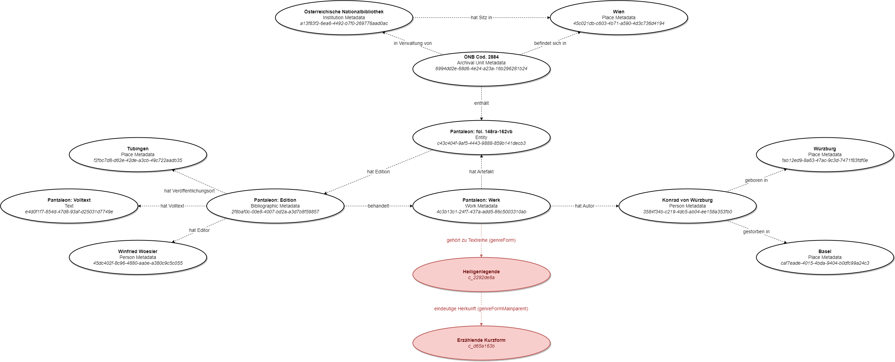
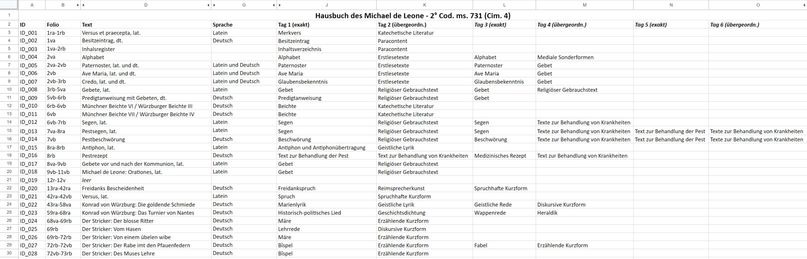
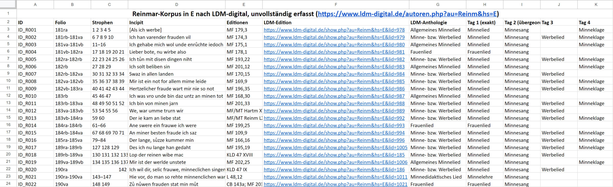

Use cases
- Use case 1: Mittelhochdeutsche Begriffsdatenbank (MHDBDB)
- Use case 2: Das Hausbuch des Michael de Leone
Use case 1: MHDBDB
Im neuen Frontend der MHDBDB werden die maschinenlesbaren, Semantic-Web-tauglichen Konzepte zwei Anwendungen haben:
Erstens dienen sie in der visuellen Suche als praktische Filtermöglichkeit. Der Filter reicht nur bis auf Ebene 4 des SKOS-Vokabulars, da noch feinere Spezifikationen nicht mehr userfreundlich im Interface umgesetzt werden können. Alle tiefer reichenden Annotationen werden bei der Suche automatisch mit höheren Werten im Baum des Vokabulars ausgegeben. Aufgrund der Annotation mit genreFormMainparent (eindeutige Herkunft) können eindeutige Graphenbäume erstellt werden. Man findet entsprechend annotierte Werke bei allen Einträgen im Baum von unten nach oben, z.B ein Werk, das als "Geistliche Rede" (genreForm) mit der Herkunft (genreFormMainparent) "Diskursive Kurzform" annotiert ist, bei allen folgenden Textreihen-Konzepten:
- Epik, Lyrik und Dramatik
- Kurzdichtung
- Diskursive Kurzform
- Geistliche Rede
- Diskursive Kurzform
- Kurzdichtung
Zweitens ist das Vokabular auch in den bibliografischen Metadaten enthalten, und zwar bereits auf Werkebene (was in die Ebene der Editionen und MHDBDB-E-Texte mit übernommen wird):

Das bedeutet, dass in der Werktitelansicht alle Werke aufgelistet werden können, die beispielsweise mit "Allegorie (c_dd3320dc)" annotiert wurden. Es ermöglicht beispielsweise das zielgerichtete Anlegen von Sammlungen oder den Download spezifischer Textreihen-Korpora.
Use case 2: Das Hausbuch des Michael de Leone
Als wichtiges Anwendungsfeld der Textreihentypologie betrachten wir die Annotation von Handschriftenbeschreibungen. In dem von Marco Heiles geleiteten Forschungsprojekt Magical Written Artefacts in Late-Medieval German Instructional Literature[1] (2023–2025) des Exzellenclusters Understanding Written Artefacts der Universität Hamburg soll die MHDBDB-Textreihentypologie um die Überlieferungsumgebung der dort im Fokus stehenden magischen Texte zu erfassen. Die Zuordnung aller Texte einer Handschrift zu jeweils mindestens einer konkreten Textreihe (genreForm) und dessen übergeordneter Zuordnung (genreFormMainparent) soll dort statistische Aussagen zu Überlieferungskontexten und damit schließlich Aussagen über das Gebrauchs- und Sammlungsinteresse der magischen Texte liefern.
Für die vorliegende Vorstellung der Textreihentypologie möchten wir diesem Vorhaben nicht vorgreifen und möchten stattdessen am Beispiel einer prominenten Sammelhandschrift (multiple text manuscript) aufzeigen, dass diese Art der Handschriftenerschließung mit unserem Vokabular möglich ist. Unsere Wahl fiel dabei auf die Handschrift 2° Cod. ms. 731 (Cim. 4) der Universitätsbibliothek München.[2] Diese Handschrift bildete ursprünglich den zweiten Teil des zweibändig angelegten 'Hausbuchs' des Würzburger bischöflichen Protonitars Michael de Leone und ist auch unter den Bezeichnungen 'Leonebuch' oder 'Würzburger Liederhandschrift' bekannt. Der Pergamentcodex von 285 Blättern im Folioformat (345 x 265 mm) entstand zur Mitte des 14. Jahrhundert (ca. 1345-1354) in Würzburg. Unsere Tabelle der Textereignisse der Handschrift orientiert sich an der detaillierten Handschriftebeschreibung von Gisela Kornrumpf und Paul-Gerhard Völker von 1968[3] und kann in Google Tabellen betrachtet und kommentiert werden.[4]

Abbildung: Tabellenausschnitt zum Hausbuch Michaels de Leone
Michaels de Leone Hausbuch ist zweisprachig angelegt. Deutsche und lateinische Texte wechseln sich ab, auch wenn die deutschen Texte den größeren Raum einnehmen. Die Tabelle erfasst bis auf die Lyrikkorpora alle deutschsprachigen Texte der Handschrift im Einzelnen und die lateinischen Kleintexte in Gruppen. Bei der Zuordnung der Texte haben wir uns an der Sekundärliteratur orientiert und ignorieren den Umstand, dass unsere Textreihentypologie eigentlich nur für die deutschsprachige Literatur von ca. 1050 bis 1520 angelegt ist. Einige Zuordnungen konnten dabei direkt aus der Handschriftenbeschreibung von Kornrumpf/Völker übernommen werden, etwa wenn dort ein Text als "Regimen sanitatis" (fol. 166ra-167ra) beschrieben wird.[5] Häufig gaben auch die Überschriften in der Handschrift selbst die Textreihe an. Die oracio hominis ad mortem egrotantis (fol. 9vb) ist ein Gebet für einen Todkranken, gehört also in die Textreihe Gebet (genreFormMainparent: Religiöser Gebrauchstext), die Beschreibung als Krankengebet wäre exakter, so fein differenziert unsere Textreihentypologie aber (noch) nicht. Für andere genügte ein Blick in die entsprechenden Einträge der einschlägigen Literaturlexika, auch wenn deren Gattungs- oder Textsortenbezeichnungen noch keinem kontrollierten Vokabular folgen. Die entsprechenden Artikel machen aber nicht immer Angaben zu den Textreihen der Werke. Zum Lucidarius (fol. 137va-154vb) finden sich beispielsweise im Verfasserlexikon keine Angaben zu Gattung oder Textreihe, auch wenn an einer Stelle von "verwandten lat. Enzyklopädien" die Rede ist.[6] Das Killy Literaturlexikon dagegen fordert bei anonymen Werken offenbar eine Werktypangabe bereits in der Überschrift. Hier wird der Lucidarius als "Geistliche Enzyklopädie"[7] beschrieben, einem Terminus, der – wie eine Abfrage in der Verfasser-Datenbank[8] zeigt – im gesamten Lexikon ansonsten nicht benutzt wird. Auch im Deutschen Literatur-Lexikon. Das Mittelalter wird der Lucidarius als "Geistliche Enzyklopädie"[9] bezeichnet, das Werk aber auch als "mhd. Prosakompendium geistlichen und weltlichen Wissens"[10] und "Verbindung von geistlicher Summa und Realiensumma"[11] näher beschreiben. Auch im Deutschen Literatur-Lexikon. Das Mittelalter wird der Begriff 'Geistliche Enzyklopädie' nur ein einziges Mal benutzt und taugt so also nicht zur Textreihenbestimmung. In der Tabelle wurde der Lucidarius daher schlicht als Enzyklopädie (genreFormMainparent: Großdidaxe) aufgenommen.
Ergänzung zu den Nachschlagewerken mussten vor allem für die kleineren Texte auch aktuelle Forschungsbeiträge herangezogen werden, etwa zu Lupold Hornburgs Reden, die dadurch einzeln erfasst werden konnten.[12] Die Textreihenzuordnung der Einzeltexte der Kleinepik-Sammlung Die Welt konnte direkt aus zwei Quellen übernommen werden. Zum einen aus dem einschlägigen Beitrag von Wolfram Achnitz und Franz-Josef Holznagel zu dieser Sammlung[13] und zum anderen aus dem Brevitas-Wiki[14], dessen Artikel zu den einzelnen Texten in der Tabelle auch verlinkt sind. Als ebenso hilfreich wie das Brevitas-Wiki zur Annotation von Kurzdichtung erwies sich die digitale Edition Lyrik des Deutschen Mittelalters (LDM), dessen Daten zum Reimarkorpus der Handschrift[15] in einer eigenen Tabelle ausgewertet wurde, bei der Annotation von Lyrik. Im LDM wird jedes Lied einer "Anthologie" zugeordnet,[16] etwa "Allgemeines Minnelied", "Minne- bzw. Werbelied", "Frauenlied" oder "Wechsel". Die Inhaltsbeschreibungen weisen zudem regelmäßig darauf hin, wenn es sich um eine Minneklage oder einen Frauenpreis handelt. Obwohl die Vokabulare der LDM und unserer Textreihentypologie nicht aufeinander abgestimmt wurden, sind sie also kongruent, weil sie sich aus derselben Fachtradition herleiten.

Abbildung: Tabellenausschnitt zum Kopus der Lieder Reinmar des Alten im Hausbuch Michaels de Leone (E)
Als besonders wichtig für die Annotation von Handschrifteninhalten mit, der Textreihentypologie hat sich herausgestellt, dass der Textreihenbegriff so flexibel ist, dass wir auch Paratexte/Paracontent[17] annotieren können. Das Leonebuch enthält beispielsweise zu Beginn einen Besitzeintrag (fol. 1va) und ein Inhaltsverzeichnis (fol. 1va-2rb). Auf den letzen Blättern der Handschrift finden zudem auch Federproben (fol. 285v, 286r). Inhaltsverzeichnisse und Indizes bilden selbstverständlich keine literarische Gattungen, dennoch unterliegen auch diese Textphänomene einer historischen Entwicklung gegenseitiger Abhängigkeiten und sie können somit auch als Textreihen verstanden werden.[18] Die Federproben (probationes pennae) sind dagegen hauptsächlich durch eine gemeinsame Schreibpraxis verbunden und die einzelnen Kleintexte und Textfragmente können häufig auch anderen Textreihen zugeordnet werden.[19] Doch auch sie sind keine Grundkonstante der Handschriftlichkeit, sondern – besonders in ihrer Formelhaftigkeit – Teil einer historischen Reihe.[20] Die Annotation der Textreihen bei der Handschriftenbeschreibung bedeutet – besonders bei der Erstbeschreibung von Handschriften – keinen erheblichen Mehraufwand, verspricht aber vor allem bei größeren Handschriftenkorpora einen erheblichen Mehrwert. Mithilfe der MHDBDB-Textreihentypologie können auch Texte, für die noch keine werkbezogenen Normdaten bereitstehen und die wie bspw. einzelne Segen, Rezepte oder Federproben wohl auch in absehbarer Zeit keine Normdaten zugewiesen bekommen werden, maschinenlesbar erfasst und statistisch ausgewertet werden. Darüber hinaus bietet die Annotation aber auch dem menschlichen Leser einen weitaus schnelleren Überblick über die inhaltliche und thematische Zusammensetzung einer Handschrift. Die Benutzer der Handschriftenbeschreibung müssen nicht mehr jeden Text selbst kennen und einordnen, sondern können auf die Beurteilung des Handschriftenbeschreibers zurückgreifen. Dabei konnten im Falle des Hausbuchs Michaels de Leone auch die lateinischen Texte mit unserem für die deutsche Literatur konzipierten Vokabular erfasst werden. Um diese oder anderssprachige Handschriften aber flächendeckend zu erfassen, wären sicher umfangreiche Ergänzungen notwendig.
[1] https://www.csmc.uni-hamburg.de/written-artefacts/research-fields/field-k/rfk03.html.
[2] Digitalisat: https://epub.ub.uni-muenchen.de/10638/.
Kurzbeschreibung im Handschriftencensus: https://www.handschriftencensus.de/6441.
[3] Gisela Kornrumpf und Paul-Gerhard Völker, Die deutschen mittelalterlichen Handschriften der Universitätsbibliothek München (Die Handschriften der Universitätsbibliothek München 1), Wiesbaden 1968, S. 66–107, Ergänzung S. 349.
[4] Tabelle in Google Tabellen: https://docs.google.com/spreadsheets/d/1wjkBEXEYj09XPpbi3vjGFA4ZuyF0g7be/edit?usp=sharing&ouid=114143101492401035777&rtpof=true&sd=true.
Kopie der Tabelle im Forschungsdatenrepositorium der Universität Hamburg: https://doi.org/10.25592/uhhfdm.12418.
[5] Vgl. Kornrumpf/Völker, Handschriften (wie Anm. 59), S. 88.
[6] Georg Steer, Art. Lucidarius, in: Verfasserlexikon. 5 (1985), Sp. 939-947.
[7] Georg Steer und Jürgen Wolf, Lucidaris, in: Killy Literaturlexikon. 2. Auflage 7 (2010), S. 531f.
[8] Verfasserdatenbank: https://www.degruyter.com/database/VDBO.
[9] Sabina Foidl, Art. Lucidarius, in: Deutsches Literatur Lexikon. Das Mittelalter 1 (2011), Sp. 558-561, hier Sp. 558.
[10] Ebd.
[11] Ebd., Sp. 559.
[12] Karina Kellermann, Ein kurtze rede wore. Die vier politischen Reimreden des Lupold Hornburg, in: Wolfram Studien 24 (2017), S. 199–220.
[13] Wolfgang Achnitz und Franz-Josef Holznagel; Der werlt lauff vnd ir posait: Die Sammlung 'Die Welt' und ihre Rezeption, in: Würzburg, der Große Löwenhof und die deutsche Literatur des Spätmittelalters (Imagines medii aevi 17), hrsg. von Horst Brunner, Wiesbaden 2004. S. 283-312.
[14] Brevitas-Wiki, https://wiki.brevitas.org/.
[15] her Reymar (E), in: Lyrik des deutschen Mittelalters, https://www.ldm-digital.de/autoren.php?au=Reinm&hs=E.
[16] Leider werden die Anthologien in der Dokumentation der Edition nicht erwähnt. Vgl. Lyrik des deutschen Mittelalters – Dokumentation, in: Lyrik des deutschen Mittelalters, https://www.ldm-digital.de/doc.php.
[17] Der in Analogie zum Paratext-Begriff Genetts entwickelte Terminus paracontent, trägt dem Umstand Rechnung, dass Handschriften nicht nur Texte im engeren Wortsinn beinhalten.Vgl. Giovanni Ciotti u.a., Definition of Paracontent, in: CSMC – Occasional Paper, 6, 2018, https://www.csmc.uni-hamburg.de/publications/occasional-papers/files/csmc-occasional-paper-6-tnt.pdf; Patrick Patrick Andrist, Toward a definition of paratexts and paratextuality: The case of ancient Greek manuscripts, in: Bible as Notepad: Tracing Annotations and Annotation Practices in Late Antique and Medieval Biblical Manuscripts (Manuscripta Biblica 3), hrsg. von Liv Ingeborg Lied und Marilena Maniaci, Berlin/Boston 2018, S. 130–150.
[18] Vgl. Nigel Palmer, Kapitel und Buch. Zu den Gliederungsprinzipien mittelalterlicher Bücher, in: Frühmittelalterliche Studien 23 (1989), S. 43-88; Karin Schneider, Paläographie und Handschriftenkunde für Germanisten. Eine Einführung. 3. Auflage. Berlin/Boston 2014, S. 163f.
[19] Vgl. bspw. Kurt Gärtner, Der Anfangsvers des Gregorius Hartmanns von Aue als Federprobe in der Trierer Handschrift von Konrads von Würzburg Silvester, S. 105-122.
[20] Vgl. dazu auch: Bernhard Bischoff, Elementarunterricht und Probationes pennae in der 1. Hälfte des Mittelalters, in: Ders. Mittelalterliche Studien I, Stuttgart 1966, S. 74-87.